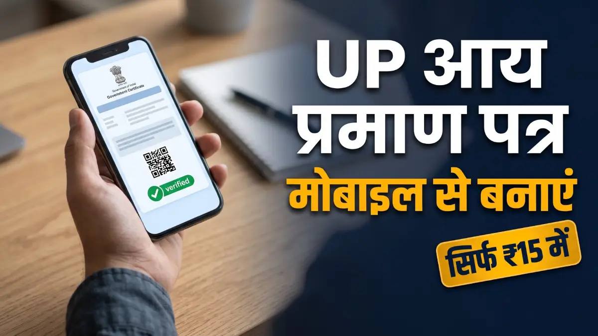
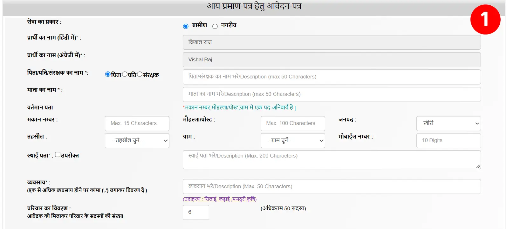
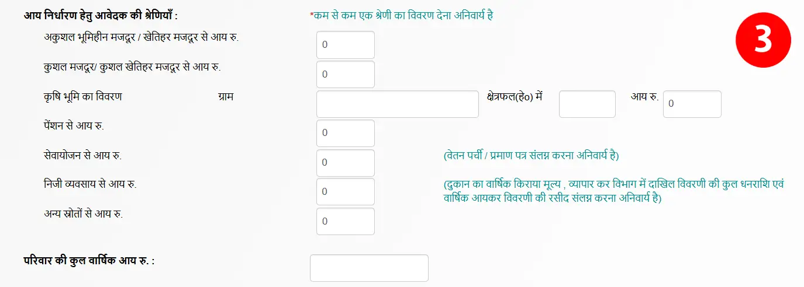
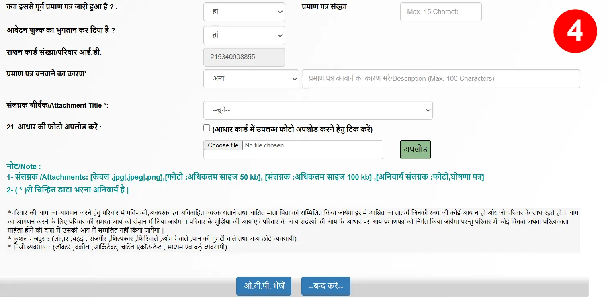

मोबाइल से यूपी आय प्रमाण पत्र कैसे बनाएं सिर्फ 15 रुपये में
जब मैं कॉलेज में था, तब मुझे भी अपना आय प्रमाण पत्र बनवाने के लिए जनसेवा केंद्र (CSC) के चक्कर लगाने पड़ते थे और हर बार 70 से 80 रुपये देने पड़ते थे। बाद में जब मैंने खुद रिसर्च की, तो पता चला कि आय प्रमाण पत्र मोबाइल से बनाया जा सकता है, तब से जब भी मेरा प्रमाण पत्र पुराना हो जाता है या घर के सदस्यों व दोस्तों को जरूरत होती है, तो मैं घर बैठे अपने फोन से ही नया आय प्रमाण पत्र अप्लाई कर लेता हूँ, जो 7 से 15 दिनों में बनकर आ जाता है।

सबसे अच्छी बात यह है कि इसके लिए आपको किसी CSC ID की जरूरत नहीं होती और यह प्रमाण पत्र हर जगह (स्कॉलरशिप, सरकारी योजना, एडमिशन) 100% मान्य होता है—मैं खुद हर जगह इसका इस्तेमाल करता हूँ और आज तक कोई दिक्कत नहीं आई।
यदि आपके पास एक स्मार्टफोन, इंटरनेट और UPI (PhonePe/Google Pay) या डेबिट कार्ड है, तो आप भी मेरी तरह मात्र ₹15 के सरकारी शुल्क में घर बैठे अपना आय प्रमाण पत्र बना सकते हैं। बस इस लेख में बताए गए सभी स्टेप्स को ध्यान से पढ़ें और फॉलो करें। चलिए शुरू करते हैं!
- मोबाइल से आय प्रमाण पत्र बनवाने के लिए जरूरी दस्तावेज और साइज लिमिट
- पासपोर्ट साइज फोटो और स्वप्रमाणित घोषणा पत्र (Self Declaration Form)
- उत्तर प्रदेश e-District (e-Sathi) पोर्टल पर नया खाता (Citizen ID) बनाने की प्रक्रिया
- उत्तर प्रदेश आय प्रमाण-पत्र आवेदन फॉर्म भरने की पूरी गाइड (Step-by-Step)
- ₹15 के सरकारी शुल्क का UPI या डेबिट कार्ड से भुगतान और पावती रसीद
- एप्लीकेशन नंबर से आवेदन की स्थिति (Application Status) ट्रैक करना
- डिजिटल हस्ताक्षरित आय प्रमाण पत्र डाउनलोड और वैधता (Validity)
- अक्सर पूछे जाने वाले सवाल (FAQs)
मोबाइल से आय प्रमाण पत्र बनवाने के लिए जरूरी दस्तावेज और साइज लिमिट
उत्तर प्रदेश (UP) में मोबाइल के माध्यम से (ई-साथी) पोर्टल से Income Certificate बनवाने के लिए जरूरी दस्तावेज और उनकी साइज की पूरी जानकारी नीचे दी गई है:
1. जरूरी दस्तावेज (Required Documents)
मोबाइल से आवेदन करते समय आपके पास निम्नलिखित दस्तावेज स्कैन या साफ फोटो के रूप में होने चाहिए:
- आधार कार्ड (Aadhaar Card): पहचान और ई-केवाईसी (e-KYC) के लिए अनिवार्य। (नाम आधार के अनुसार ही होना चाहिए)।
- स्व-प्रमाणित घोषणा पत्र (Self-Declaration Form): यह बहुत महत्वपूर्ण है जो अब पुराने नोटरी शपथ पत्र की जगह लेता है। इसे पोर्टल से डाउनलोड करके, अपनी वार्षिक आय भरकर, नीचे अपने हस्ताक्षर करके अपलोड करना होता है।
- राशन कार्ड (Ration Card) या परिवार आईडी: परिवार की पहचान और पते के प्रमाण के लिए।
- पासपोर्ट साइज फोटो: आवेदक की साफ फोटो।
- आय का प्रमाण (रोजगार के आधार पर):
- नौकरीपेशा (Salaried): पिछले 3 महीने की सैलरी स्लिप (Salary Slip) या फॉर्म-16।
- किसान (Farmer): खतौनी (भूमि रिकॉर्ड से) या ग्राम प्रधान/वार्ड पार्षद का संस्तुति पत्र।
- स्वरोजगार / व्यापारी / मजदूर: आय का स्व-घोषणा पत्र या ग्राम प्रधान/पार्षद का पत्र।
2. फाइल साइज और फॉर्मेट लिमिट (File Size & Format Limits)
मोबाइल से डॉक्यूमेंट अपलोड करते समय पोर्टल के नियमों का सख्ती से पालन करना होता है, अन्यथा फाइल अपलोड नहीं होगी:
- साइज: अधिकतम 50 KB से कम।
- फॉर्मेट: JPEG / JPG।
- साइज: प्रत्येक फाइल अधिकतम 100 KB से कम होनी चाहिए।
- फॉर्मेट: JPEG / JPG।
पासपोर्ट साइज फोटो और स्वप्रमाणित घोषणा पत्र (Self Declaration Form)
यहां से 📥 स्वप्रमाणित घोषणा पत्र डाउनलोड करें आपको स्वप्रमाणित घोषणा पत्र डाउनलोड कर लेना है। डाउनलोड करने के बाद आपको यह घोषणा पत्र प्रिंट करवा लेना है।
अब आपको इस घोषणा पत्र में ध्यान पूर्वक अपनी जानकारी भरनी है। नाम, पिता का नाम, उम्र, वर्तमान वर्ष, व्यवसाय, निवासी, स्थान, दिनांक (जिस दिन आवेदन कर रहे हैं), आवेदक/आवेदिका के हस्ताक्षर और आवेदक/आवेदिका का नाम। सारी जानकारी ध्यान पूर्वक भरने के पश्चात आपको अपने फोन से इसकी फोटो खींचकर 100 KB से कम का JPEG या JPG बनाना है।
उत्तर प्रदेश e-District (e-Sathi) पोर्टल पर नया खाता (Citizen ID) बनाने की प्रक्रिया
यदि आपके पास उत्तर प्रदेश के ई-डिस्ट्रिक्ट पोर्टल का खाता नहीं है, तो नया खाता बनाने के लिए नीचे दिए गए चरणों का पालन करें:
- चरण 1. वेबसाइट पर जाएं: सबसे पहले उत्तर प्रदेश ई-डिस्ट्रिक्ट की आधिकारिक वेबसाइट (edistrict.up.gov.in) पर जाएं और होम पेज पर दिए गए 'सिटिजन लॉगिन (ई-साथी)' विकल्प पर क्लिक करें।
- चरण 2. नवीन पंजीकरण चुनें: ई-साथी लॉगिन पेज खुलने के बाद ऊपर दिए गए 'नवीन उपयोगकर्ता पंजीकरण' (New User Registration) लिंक पर क्लिक करें।
- चरण 3. पंजीकरण फॉर्म भरें: अब आपके सामने एक नया फॉर्म खुलेगा। इसमें अपनी बुनियादी जानकारी (जैसे नाम, जन्मतिथि, लिंग, आवासीय पता, पिन कोड, जिला और मोबाइल नंबर) ध्यानपूर्वक भरें।
- चरण 4. फॉर्म सुरक्षित करें: सभी विवरण भरने के बाद नीचे दिया गया सुरक्षा कोड (Captcha) दर्ज करें और 'सुरक्षित करें' बटन पर क्लिक करें।
- चरण 5. यूजर आईडी और ओटीपी प्राप्त करें: पंजीकरण सफल होते ही आपके रजिस्टर्ड मोबाइल नंबर पर SMS के माध्यम से एक यूजर आईडी और अस्थायी पासवर्ड (OTP) भेजा जाएगा।
- चरण 6. पहली बार लॉगिन करें: अब वापस 'पंजीकृत उपयोगकर्ता लॉगिन' पेज पर आएं। यहाँ अपना यूजरनेम दर्ज करें, पासवर्ड के स्थान पर मोबाइल पर आया OTP भरें, सुरक्षा कोड (Captcha) डालकर 'सबमिट' पर क्लिक करें।
- चरण 7. नया पासवर्ड बनाएं: पहली बार लॉगिन करने पर पासवर्ड बदलने (Password Reset) का पेज खुलेगा। यहाँ अपना पुराना OTP दर्ज करें, फिर अपनी पसंद का एक मजबूत नया पासवर्ड दर्ज करके उसे 'कन्फर्म पासवर्ड' में दोबारा भरें।
- चरण 8. पासवर्ड सुरक्षित करके पोर्टल में प्रवेश करें: इसके बाद 'पासवर्ड बदलें' बटन पर क्लिक करें। पासवर्ड सफलतापूर्वक बदलने के बाद मुख्य लॉगिन पेज पर जाएं और अपनी नई आईडी, नए पासवर्ड व कैप्चा की सहायता से पोर्टल में सफलतापूर्वक लॉगिन कर लें।
उत्तर प्रदेश आय प्रमाण-पत्र आवेदन फॉर्म भरने की पूरी गाइड (Step-by-Step)
पोर्टल लॉगिन होने के बाद
"आय प्रमाण पत्र" पर क्लिक करें। इसके बाद अपना आधार नंबर और कैप्चा भरकर कन्फर्मेशन बॉक्स पर टिक (✔) करें और 'सबमिट' बटन पर क्लिक करें।
आधार से लिंक मोबाइल नंबर पर आया ओटीपी (OTP) दर्ज करें और सबमिट बटन पर क्लिक करें।
आवेदक की सामान्य जानकारी (फोटो 1 को देखें)
फॉर्म के सबसे ऊपरी हिस्से में आपको आवेदक का व्यक्तिगत विवरण और पता भरना होता है:
- सेवा का प्रकार: यदि आप गाँव में रहते हैं तो 'ग्रामीण' चुनें, और यदि शहर या कस्बे में रहते हैं तो 'नगरीय' पर टिक करें।
- प्रार्थी का नाम (हिंदी और अंग्रेजी में): आधार केवाईसी के कारण दोनों नाम पहले से भरे हुए मिलेंगे।
- पिता/पति/संरक्षक का नाम: यहाँ 'पिता' या 'पति' चुनें और सामने वाले बॉक्स में उनका नाम हिंदी में लिखें।
- माता का नाम: बॉक्स में अपनी माता जी का नाम हिंदी में लिखें।
- वर्तमान पता:
- अपना मकान नंबर (यदि पता हो), मोहल्ला/पोस्ट का नाम भरें।
- अपना जनपद (जिला), तहसील और ग्राम (गाँव) लिस्ट में से चुनें। (नोट: मकान नंबर, मोहल्ला/पोस्ट या ग्राम में से कम से कम एक चीज भरना अनिवार्य है)।
- मोबाइल नंबर: अपना 10 अंकों का चालू मोबाइल नंबर दर्ज करें।
- स्थाई पता: सामने बने छोटे से बॉक्स 'उपरोक्त' पर टिक (✔) कर दें। टिक करते ही ऊपर भरा गया पता नीचे अपने आप आ जाएगा।
- व्यवसाय: आवेदक या परिवार का मुख्य काम हिंदी में लिखें (जैसे- कृषि, मजदूरी, सिलाई आदि)।
- परिवार का विवरण (सदस्यों की संख्या): आवेदक को मिलाकर घर में कुल कितने सदस्य (पति-पत्नी, अविवाहित बच्चे और आश्रित माता-पिता) हैं, उनकी संख्या लिखें ।

परिवार के सदस्यों और उनकी आय का विवरण (फोटो 2 को देखें)
भाग 2 में आपने परिवार के जितने सदस्यों की संख्या डाली है, उतने ही बॉक्स की एक तालिका (Table) खुल जाएगी। लोगों से अक्सर यहाँ गलती होती है, इसलिए इसे ध्यान से भरें:
- परिवार के सदस्य का नाम: क्रम संख्या 1 में आवेदक का नाम, और बाकी नंबरों (2, 3, 4...) में माता-पिता व भाई-बहनों के नाम हिंदी में लिखें।
- व्यवसाय:
- घर के कमाने वाले मुख्य सदस्य (जैसे पिता या स्वयं) के सामने उनका काम लिखें (जैसे- मजदूरी या कृषि)।
- माता या पत्नी के सामने गृहिणी लिखें।
- पढ़ने वाले बच्चों या भाई-बहनों के सामने छात्र / छात्रा लिखें।
- व्यवसाय से आय (वार्षिक):
- केवल जो सदस्य कमाता है (जैसे पिता या मुखिया), उसी के सामने वाले बॉक्स में पूरे साल की आय (जैसे: 36000 या 42000) भरें।
- नोटः यदि घर में पहले से किसी सदस्य का आय प्रमाण-पत्र बना है, तो उस पर लिखी वार्षिक आय देखकर ही यहाँ दर्ज करें।
- बाकी सभी सदस्यों (गृहिणी और छात्र) के सामने आय वाले बॉक्स में 0 ही लिखा रहने दें।

आय निर्धारण हेतु आवेदक की श्रेणियाँ : सबसे महत्वपूर्ण (फोटो 3 को देखें)
यह पूरे फॉर्म का सबसे महत्वपूर्ण हिस्सा है जहाँ लोग सबसे ज्यादा अटकते हैं। यहाँ लाल रंग से लिखा है कि "कम से कम एक श्रेणी का विवरण देना अनिवार्य है"।
- अकुशल भूमिहीन मजदूर / खेतिहर मजदूर से आय रु.: यदि आपके पास खेती की जमीन नहीं है और आप सामान्य मजदूरी करते हैं, तो अपनी सालाना आय यहाँ भरें।
- कुशल मजदूर / कुशल खेतिहर मजदूर से आय रु.: यदि आप राजमिस्त्री, बढ़ई, लोहार, सिलाई या फेरी लगाने जैसे काम करते हैं, तो अपनी आय इस बॉक्स में भरें।
- कृषि भूमि का विवरण: यदि आपकी आय खेती से होती है, तो 'ग्राम' में गाँव का नाम लिखें, 'क्षेत्रफल (हे०) में' अपनी खतौनी देखकर जमीन हेक्टेयर में लिखें, और 'आय रु.' में खेती से होने वाली सालाना कमाई लिखें।
- पेंशन / सेवायोजन / निजी व्यवसाय से आय: ध्यान रखें, यदि आप नौकरी ('सेवायोजन') या बड़े व्यापार ('निजी व्यवसाय') वाले बॉक्स में आय भरते हैं, तो आपको वेतन पर्ची या टैक्स की रसीद अपलोड करना अनिवार्य हो जाएगा।
- अन्य स्रोतों से आय रु. (सबसे सरल और सुरक्षित विकल्प): यदि आप छात्र हैं, गृहिणी हैं या सामान्य काम करते हैं और किसी झंझट से बचना चाहते हैं, तो ऊपर के सभी बॉक्स में 0 रहने दें और केवल 'अन्य स्रोतों से आय रु.' वाले बॉक्स में अपनी वार्षिक आय (जैसे 36000 या 42000) भर दें।
- परिवार की कुल वार्षिक आय रु. : इस सबसे नीचे वाले बॉक्स में वही कुल रकम लिखें जो आपने ऊपर भरी है।

दस्तावेज अपलोड करना और फाइनल सबमिशन (फोटो 4 को देखें)
यह फॉर्म का आखिरी हिस्सा है:
- क्या इससे पूर्व प्रमाण पत्र जारी हुआ है?: यदि पहली बार बनवा रहे हैं तो 'नहीं' चुनें। यदि पहले बन चुका है और नंबर पता है, तभी 'हाँ' चुनकर पुराना प्रमाण पत्र संख्या डालें।
- आवेदन शुल्क का भुगतान कर दिया है?: यहाँ 'हाँ' ही रहने दें (शुल्क फॉर्म सबमिट करने के बाद कटता है)।
- राशन कार्ड संख्या / परिवार आई.डी.: यदि आपके पास राशन कार्ड है, तो उसकी संख्या यहाँ दर्ज करें।
- प्रमाण पत्र बनवाने का कारण: ड्रॉपडाउन लिस्ट में से कारण चुनें (जैसे- छात्रवृत्ति हेतु, शिक्षण संस्थान में प्रवेश हेतु या 'अन्य' चुनकर बगल वाले बॉक्स में 'आवश्यक कार्य हेतु' लिख दें)।
- संलग्नक शीर्षक (Attachment Title) - डॉक्यूमेंट अपलोड करना:
- आधार की फोटो: यदि आप अलग से फोटो अपलोड नहीं करना चाहते, तो 'आधार कार्ड में उपलब्ध फोटो अपलोड करने हेतु टिक करें' वाले बॉक्स पर टिक कर दें, इससे आधार वाली फोटो अपने आप लग जाएगी।
- अन्य दस्तावेज: लिस्ट में से बारी-बारी से 'स्वप्रमाणित घोषणा पत्र' और 'अन्य' (आधार कार्ड/राशन कार्ड) चुनें, Choose File पर क्लिक करके अपने फोन से फाइल सेलेक्ट करें और हरे रंग के 'अपलोड' बटन पर क्लिक करते जाएं।
- साइज का ध्यान रखें: केवल .jpg, .jpeg फाइल ही अपलोड करें। फोटो अधिकतम 50 KB और अन्य दस्तावेज (घोषणा पत्र आदि) अधिकतम 100 KB के होने चाहिए।

नोटः सारी जानकारी एक बार फिर से देख लें, यदि कहीं कोई गलती है तो उसे अभी सुधार लें।
फाइनल सबमिट: सारे डॉक्यूमेंट अपलोड होने के बाद सबसे नीचे नीले बटन 'ओ.टी.पी. भेजें' / 'दर्ज करें' पर क्लिक करें, ओटीपी डालकर फॉर्म सबमिट करें।
इसके बाद आपको एक Application Number मिलेगा, जिसका स्क्रीनशॉट ले लें या कहीं लिख लें, क्योंकि यह बहुत जरूरी है।
₹15 के सरकारी शुल्क का UPI या डेबिट कार्ड से भुगतान और पावती रसीद
फॉर्म सबमिट होने के बाद आपके सामने भरे गए आवेदन का प्रीव्यू (Preview) खुलेगा, जिसके सबसे ऊपर आवेदन संख्या (Application Number) लिखी होती है।
शुल्क भुगतान की प्रक्रिया:
- अपनी जानकारी का मिलान करने के बाद नीचे दिए गए 'सेवा शुल्क भुगतान' विकल्प पर क्लिक करें।
- अब पेमेंट गेटवे पर अपना आवेदन नंबर सबमिट करके UPI, QR Code, डेबिट कार्ड या नेट बैंकिंग में से किसी एक विकल्प को चुनें और मात्र ₹15 का सरकारी शुल्क जमा करें।
पावती रसीद (Acknowledgement Slip) प्राप्त करना:
- भुगतान सफल होने के बाद 'Proceed' या 'सुरक्षित करें' पर क्लिक करते ही आपकी पावती रसीद (Acknowledgement Slip) जनरेट हो जाएगी।
- भविष्य में अपने प्रमाण पत्र का स्टेटस चेक करने और उसे डाउनलोड करने के लिए इस रसीद (जिसमें आवेदन संख्या दर्ज होती है) का स्क्रीनशॉट सेव कर लें या पीडीएफ डाउनलोड कर लें।
⚠️ पेमेंट करते समय पेज एरर (Page Error) आने पर समाधान:
अक्सर मोबाइल से ₹15 का भुगतान करते ही ई-साथी पोर्टल लॉगआउट हो जाता है या स्क्रीन पर 'Error / Something Went Wrong' आ जाता है। ऐसी स्थिति में दोबारा पैसे बिल्कुल न कटाएं, बल्कि यह आसान तरीका अपनाएं:
- दोबारा लॉगिन करें: पोर्टल के होमपेज पर जाकर अपनी सिटीजन आईडी और पासवर्ड से दोबारा लॉगिन करें।
- आवेदन की सूची खोलें: डैशबोर्ड पर ऊपर दिए गए 'कुल लम्बित आवेदन' (Pending Applications) या 'सेवा शुल्क भुगतान' विकल्प पर क्लिक करें। यदि Pending Applications न दिखे, तो अपना Application Number डालें।
- सुरक्षित करें पर क्लिक करें: अपनी आवेदन संख्या चुनकर 'Submit' करें। चूंकि आपका पैसा पहले ही कट चुका है, इसलिए अब वहां पैसे काटने के बजाय सीधे 'सुरक्षित करें' (Proceed/Save) का बटन दिखाई देगा।
- रसीद प्राप्त करें: इस बटन पर क्लिक करते ही आपका फॉर्म संबंधित अधिकारी (तहसीलदार/लेखपाल) को फॉरवर्ड हो जाएगा और आपकी पावती रसीद (Acknowledgement Slip) तुरंत स्क्रीन पर आ जाएगी। (ध्यान रहे: जब तक यह रसीद जनरेट नहीं होती, तब तक आवेदन अधूरा माना जाता है)।
एप्लीकेशन नंबर से आवेदन की स्थिति (Application Status) ट्रैक करना
आय प्रमाण पत्र के लिए ऑनलाइन आवेदन और शुल्क भुगतान करने के बाद, आप बिना लॉगिन किए ही चेक कर सकते हैं कि आपका फॉर्म किस अधिकारी के पास पहुँचा है और कब तक बनकर तैयार होगा। इसकी प्रक्रिया नीचे दी गई है:
- स्टेप 1: आधिकारिक वेबसाइट पर जाएं: सबसे पहले उत्तर प्रदेश ई-डिस्ट्रिक्ट पोर्टल के मुख्य पेज (Home Page) पर जाएं।
- स्टेप 2: 'आवेदन की स्थिति' पर क्लिक करें: होम पेज पर ऊपर की तरफ दिए गए "आवेदन की स्थिति" (Application Status) विकल्प पर क्लिक करें।
- स्टेप 3: एप्लीकेशन नंबर दर्ज करें: अब आपके सामने एक नया बॉक्स खुलेगा। यहाँ अपनी पावती रसीद (Acknowledgement Slip) पर लिखी आवेदन संख्या (Application Number) दर्ज करें और बगल में बने सर्च (Search) आइकॉन पर क्लिक करें।
- स्टेप 4: वर्तमान स्टेटस और पूरा विवरण देखें: सर्च पर क्लिक करते ही आपके आवेदन का स्टेटस खुल जाएगा। अधिक जानकारी के लिए नीचे दिए गए 'विवरण हेतु क्लिक करें' पर टैप करें। यहाँ आपको साफ-साफ दिख जाएगा कि आपका फॉर्म तहसीलदार द्वारा लेखपाल को कब फॉरवर्ड किया गया, लेखपाल ने रिपोर्ट लगाई या नहीं, और आपका प्रमाण पत्र जारी (Approve) हुआ है या अभी प्रक्रिया में है।
डिजिटल हस्ताक्षरित आय प्रमाण पत्र डाउनलोड और वैधता (Validity)
जब हल्का लेखपाल और तहसीलदार द्वारा आपके आवेदन का सत्यापन पूरा कर लिया जाता है, तो आपका आय प्रमाण पत्र पोर्टल पर जारी (Approve) कर दिया जाता है। इसे अपने मोबाइल में डाउनलोड करने की प्रक्रिया और वैधता की जानकारी नीचे दी गई है:
आय प्रमाण पत्र डाउनलोड करने की प्रक्रिया:
- पोर्टल पर लॉगिन करें: सबसे पहले ई-साथी पोर्टल (esathi.up.gov.in) पर अपनी यूजर आईडी और पासवर्ड की मदद से लॉगिन करें।
- निस्तारित आवेदन पर क्लिक करें: डैशबोर्ड पर ऊपर की तरफ दिए गए 'निस्तारित आवेदन' (Disposed Applications) विकल्प पर क्लिक करें।
- रसीद और प्रमाण पत्र खोलें: अब वहां 'Income' (आय) विकल्प चुनें। आपके सामने स्वीकृत हो चुके प्रमाण पत्र की आवेदन संख्या (Application Number) दिखाई देगी, उस पर क्लिक करें।
- पीडीएफ (JPG) सेव करें: क्लिक करते ही आपकी स्क्रीन पर डिजिटल हस्ताक्षरित आय प्रमाण पत्र खुल जाएगा। नीचे दिए गए 'Print' बटन पर क्लिक करके इसे अपने फोन में JPG फॉर्मेट में सेव कर लें और किसी भी साइबर कैफे से इसका प्रिंटआउट निकलवा लें।
आय प्रमाण पत्र की वैधता (Validity):
- उत्तर प्रदेश सरकार के नियमों के अनुसार, ई-डिस्ट्रिक्ट पोर्टल से जारी किया गया आय प्रमाण पत्र जारी होने की तिथि से 3 वर्ष (3 Years) तक पूरी तरह मान्य रहता है।
- इन 3 वर्षों के भीतर आप इसका उपयोग छात्रवृत्ति (Scholarship), सरकारी योजनाओं, स्कूल/कॉलेज में प्रवेश और अन्य सभी सरकारी कार्यों में कर सकते हैं। 3 साल पूरे होने के बाद आपको नया प्रमाण पत्र बनवाना होता है।
अक्सर पूछे जाने वाले सवाल (FAQs)
उत्तर: ऑनलाइन आवेदन करने के बाद आय प्रमाण पत्र बनने में सामान्यतः 7 से 15 कार्यदिवस (Working Days) का समय लगता है।
उत्तर: खुद मोबाइल से ई-साथी पोर्टल पर आवेदन करने में मात्र ₹15 का सरकारी शुल्क लगता है।
उत्तर: उत्तर प्रदेश में आय प्रमाण पत्र जारी होने की तिथि से 3 साल (3 Years) तक मान्य रहता है।
उत्तर: हाँ, कोई भी नागरिक ई-डिस्ट्रिक्ट पोर्टल के 'सिटिजन लॉगिन (ई-साथी)' विकल्प पर अपनी मुफ्त आईडी बनाकर बिना जनसेवा केंद्र के खुद मोबाइल से आवेदन कर सकता है।
उत्तर: पासपोर्ट साइज फोटो का साइज अधिकतम 50 KB और स्वप्रमाणित घोषणा पत्र व अन्य दस्तावेजों का साइज अधिकतम 100 KB होना चाहिए ।